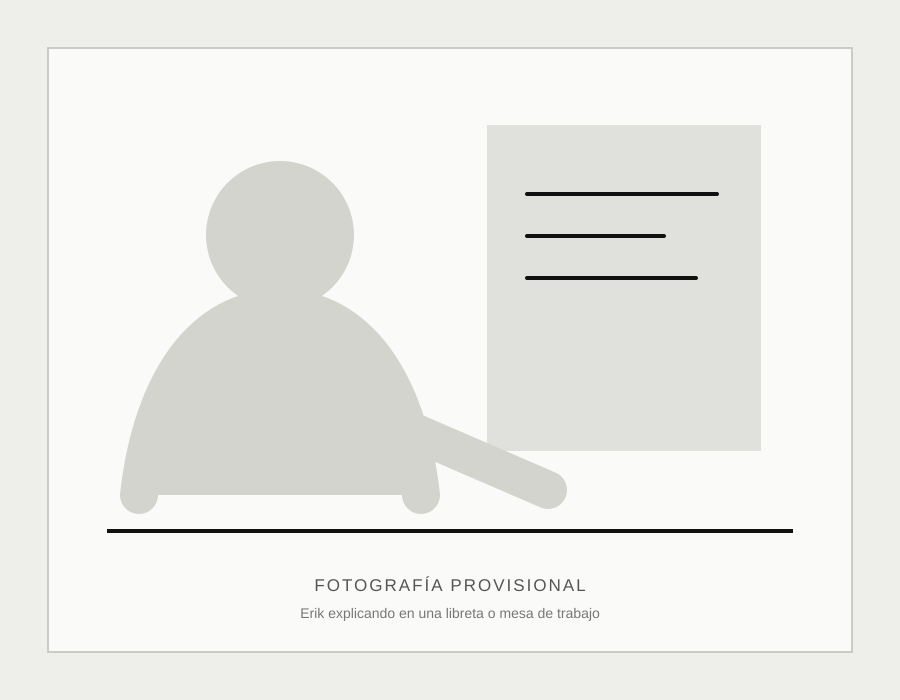

Regularización académica
Trabajamos los conocimientos que necesitas reforzar para comprender mejor tus materias y avanzar con mayor seguridad.
Asesorías particulares en matemáticas
Ayudamos a estudiantes de secundaria, preparatoria y universidad a obtener conocimientos matemáticos mediante asesorías particulares a domicilio, atención personalizada, materiales adaptados y herramientas tecnológicas modernas. Nuestro propósito es que cada estudiante sea capaz de crear herramientas matemáticas que le sirvan en cualquier momento de su vida.
Contáctanos y agenda tu primera sesiónPara nosotros las matemáticas son mucho más que una asignatura escolar. Son una forma de comprender el mundo, resolver problemas y construir herramientas que permitan afrontar con mayor libertad los desafíos de la vida.
Las herramientas matemáticas pueden adoptar muchas formas: estandarizar una receta mediante cantidades y tiempos bien definidos, una hoja de cálculo que automatiza un proceso, un algoritmo que resuelve un problema, un programa de computadora o un modelo que facilita la toma de decisiones. Creemos que aprender matemáticas significa desarrollar la capacidad de crear este tipo de herramientas para comprender, organizar y transformar la realidad.
Elegimos llevar las asesorías a domicilio porque creemos que el aprendizaje ocurre mejor cuando el estudiante se encuentra en un entorno donde se siente cómodo, seguro y acompañado. Queremos acercar las matemáticas a las personas, adaptándonos a su contexto y demostrando que el conocimiento puede construirse desde cualquier lugar.
Servicios
El trabajo parte de tu nivel actual, el tema que necesitas resolver y el objetivo que quieres alcanzar.
Trabajamos los conocimientos que necesitas reforzar para comprender mejor tus materias y avanzar con mayor seguridad.
Los ejercicios y materiales se preparan de acuerdo con tu nivel, tus temas y tus objetivos.
Revisamos los temas importantes, practicamos ejercicios y desarrollamos estrategias para afrontar evaluaciones y exámenes de admisión.
Cómo funciona
Lo urgente y lo importante se trabajan en el orden que mejor responda a cada situación.
Revisamos el tema, la materia, el objetivo y cualquier evaluación próxima.
Mientras trabajamos, observo qué conceptos dominas y cuáles necesitan reforzarse.
Si existe un examen o tarea próxima, comenzamos por las herramientas necesarias para enfrentarla.
Después trabajamos los conocimientos anteriores que permiten comprender realmente el tema.
Utilizamos ejercicios, materiales y herramientas adaptadas para consolidar el aprendizaje.
Sesiones de 2 horas y media
$250 MXN
Asesoría individual en el domicilio del estudiante dentro de Mérida, Yucatán.

Sobre Erik
Soy Erik Estrella. Comencé a ayudar a otras personas con matemáticas a los 14 años y actualmente cuento con más de 17 años de experiencia. Para mí, las matemáticas no son solamente una materia que se enseña: son herramientas que utilizo para resolver problemas, crear materiales y desarrollar proyectos.
Mi objetivo es acompañar a cada estudiante con paciencia, respeto y claridad, para que pueda enfrentarse a las matemáticas con mayor confianza y tranquilidad.
Conoce más sobre Erik
Herramientas
Durante las sesiones puedo utilizar herramientas como GeoGebra, Python, LaTeX e inteligencia artificial cuando ayudan a visualizar un concepto, comprobar un resultado o crear material personalizado. La tecnología apoya el razonamiento del estudiante; no lo sustituye.
Próximas herramientas
Un espacio preparado para crecer con materiales de apoyo y práctica.
Una evaluación breve para identificar conocimientos que conviene reforzar.
Actividades organizadas por nivel y tema.
Herramientas para explorar procedimientos y comprobar resultados.
Valores
Aprender también depende de sentirse respetado, escuchado y capaz de preguntar.
Cada estudiante aprende a un ritmo diferente.
Los errores se corrigen sin burlas ni humillaciones.
Las matemáticas pueden aprenderse desde diferentes caminos.
Las dificultades se comunican con claridad y sensibilidad.
No se prometen resultados imposibles ni soluciones mágicas.
Preguntas frecuentes
A estudiantes de secundaria, preparatoria y universidad.
Las sesiones se realizan a domicilio en Mérida, Yucatán.
Cada sesión tiene una duración de dos horas y media.
La tarifa estándar es de $250 MXN por sesión.
Revisamos el objetivo del estudiante, el tema actual y los conocimientos relacionados. El diagnóstico se realiza mientras comenzamos a trabajar.
Sí. Cuando es útil, empleo herramientas como GeoGebra, Python, LaTeX o inteligencia artificial para visualizar, comprobar o preparar materiales.
No se puede garantizar una calificación específica. Se ofrece acompañamiento profesional, materiales y explicación personalizada, pero el avance también requiere participación del estudiante.
Puedes consultar disponibilidad directamente por WhatsApp al 999 129 3497.
Comencemos
Escríbeme por WhatsApp para contarme qué tema necesitas trabajar y consultar los horarios disponibles.
Escribir por WhatsApp 999 129 3497